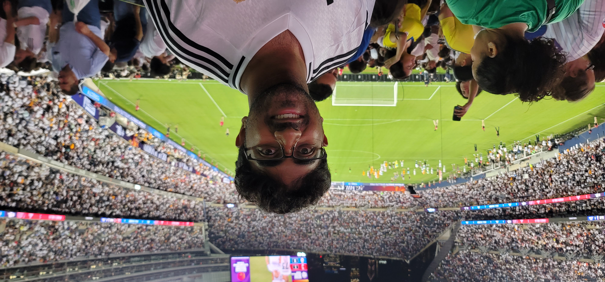

About us
Amit Diggavi

My name is Amit Diggavi and I am a senior pursuing a Information Science Major and a Computer Science Certificate.
I enjoy riding my motorcycle and going on rides with my friends. I also love to watch soccer.
Ella Pierce
I'm a senior at the University of Wisconsin-Madison, originally from Sacramento, California, majoring in Communication Arts with a certificate in Digital Studies.
My academic focus explores how digital media and communication can influence social justice, especially in challenging systemic biases.
Through coursework on intersectionality and digital equity, I’m passionate about raising awareness of implicit bias and using technology to promote inclusivity.